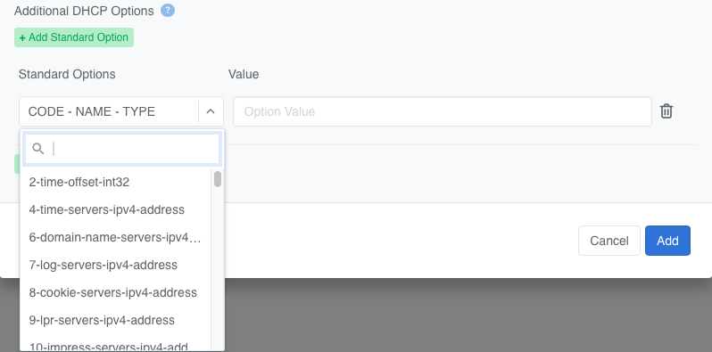
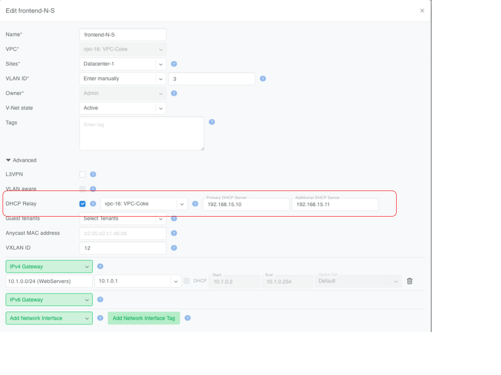
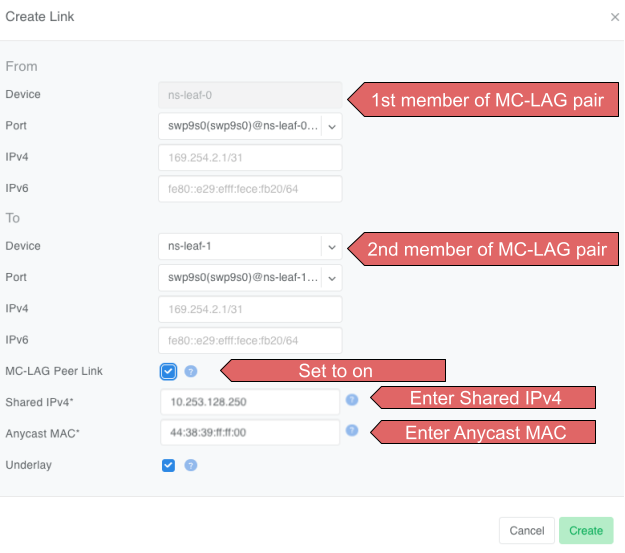

A V-Net (Virtual Network) is a Netris construct for grouping switch ports into a defined network segment—much like a traditional VLAN or a public cloud subnet.
To build a V-Net you only need to supply a list of switch ports, a name, parentVPC, and site(s). Optionally IP subnet, gateway, and DHCP settings.
Netris, having already configured the EVPN underlay, then automatically pushes the entire under-the-hood V-Net configuration to every Ethernet switch and DPU in the fabric:
VLAN-to-VNI mapping, when needed
Anycast gateway IP/MAC on every leaf that hosts the V-Net, when a gateway is specified
Assign switch ports to the appropriate VLANs or configure L3 physical/subinterfaces
Set MTU
Configure custom LLDP TLVs
Netris V-Net supports two transport modes:
L2VPN (Layer 2 Virtual Private Network) is similar to a traditional VLAN with modern and scalable implementation. It is typically used for front-end (north-south) or management/out-of-band networks. Add a gateway, and it behaves like a VLAN with an SVI / IRB.
L2VPN is implemented with VXLAN (Virtual Extensible LAN) transport and is a technology that enables the creation of Layer 2 switched overlays on top of a Layer 3 routed infrastructure. Often used in data centers to provide flexibility and scalability, VXLAN encapsulates Ethernet frames within UDP packets, enabling Layer 2 segments to span across a routed network.
EVPN (Ethernet VPN) is a control plane protocol that works with VXLAN to distribute MAC address information and manage traffic to enable efficient and scalable Layer 2 connectivity.
L3VPN is typically used for back-end (east–west) connectivity in GPU clusters on Ethernet-based AI fabrics such as NVIDIA Spectrum-X. Built as one mini-subnet per switch port, a VXLAN L3VPN is conceptually similar to MPLS L3VPN in provider networks.
VXLAN L3VPN is implemented by extending VXLAN’s overlay capabilities to support Layer 3 routing between different Layer 2 networks (VNIs). This is achieved by using an IP VRF and a Layer 3 VNI (VXLAN Network Identifier) within the VXLAN tunnel to forward routed traffic between VNIs. Essentially, VXLAN provides the encapsulation and tunneling, while EVPN (Ethernet VPN) distributes reachability information using BGP.
Each switch port gets its own /31 IPv4 (RFC 3021) or /127 IPv6 (RFC 6164) address; the leaf’s address becomes the server’s default gateway. All of those “2 host” subnets are advertised inside the VPC’s VRF, so every server can reach every other purely through routing—there is no shared Layer-2 broadcast domain.
L2VPN routed V-Nets (where an IP gateway is added) may also be configured with a DHCP service fully managed by Netris and hosted on SoftGate.
You can configure additional DHCP Option Sets before enabling a DHCP server for any V-Net. Add a DHCP Options Set by navigating to Services->DHCPOptionsSets and clicking +Add in the top right.
Netris supports a wide range of Standard DHCP Options.

Netris also enables you to define Custom DHCP Options.
Netris supports using an external DHCP server (outside of Netris) by enabling the DHCP Relay function. This allows DHCP clients inside a V-Net to obtain addresses from a non-Netris-managed DHCP server running in the same or another VPC.
To configure DHCP Relay in a V-Net:
Specify the VPC where the DHCP server is located.
Enter the IP addresses of the primary and (optionally) backup DHCP servers.
Tip
In a VPC a DHCP Relay service and a DHCP service cannot be enabled simultaneously.

Note
VPC peering is mandatory on Cumulus Linux fabrics. Without it, relay traffic cannot reach the DHCP server. Configure peering under Network → VPC Peering in the Controller.
Non-overlapping IP ranges are required between the client VPCs (Coke and Pepsi) and the DHCP server’s VPC (Shared). The DHCP server must be able to route back to both Coke and Pepsi.
Switch loopback IP is the source IP of relayed packets
Puts the V-Net in Layer-3 mode: Netris assigns each switch port a /31 and sets the leaf’s IP as the host’s gateway.
Ethernet fabrics only. Enabling L3VPN forces VLAN ID = Disabled.
VLAN-aware
Lets one V-Net carry multiple VLAN tags inside a single VXLAN ID. Think of this like Q-in-Q, but it’s Q-in-VxLAN.
Requires switches that support VLAN-aware bridging.
Guest Tenants (Collaborators)
Admin units that may add/remove switch ports but cannot change core settings.
Optional; owner always retains full control.
Anycast MAC address
Overrides the auto-generated anycast MAC.
Leave blank to use the default.
VXLAN ID
VXLAN Network Identifier (1 – 16777216).
Auto-assigned unless you enter a value.
IPv4 Gateway / IPv6 Gateway
Anycast gateway IPs for Layer-3-enabled L2VPN.
Hidden when L3VPN is on. Leave blank for pure Layer-2 V-Net. Must be configured under Network->IPAM as a subnet with purpose set to common, assigned to the Owner, and available in the site where V-Net is intended to span.
Warning
Many switches cannot autodetect 1Gbps link speed. If attaching hosts with 1Gbps NICs to 10Gbps switch ports, set the speed for the given Switch Port from Auto(default) to 1Gbps. You can edit a port in Network->NetworkInterfaces individually or in bulk.
Any V-Net may span multiple sites. If the V-Net spans multiple sites and you add a gateway, you must first create the subnet under Network->Subnets and assign it to all sites the V-Net will span (You can define additional sites in Network->Sites). This way the anycast IP is valid everywhere.
Link Aggregation (LAG), also known as link bundling, Ethernet/network/NIC bonding, or port teaming, is a method of combining (aggregating) multiple network interfaces to increase throughput beyond what a single switch port could provide and/or provide redundancy in case one of the links fails.
An endpoint may be connected to a single switch with multiple cables, which are aggregated into a single logical bonded interface. This is known as single-homing.
An endpoint may be connected to two or more switches simultaneously, with these connections aggregated into a single logical bonded interface. Often done to eliminate single points of hardware failure, this method is known as multi-homing.
For best results, Netris recommends enabling Link Aggregation Control Protocol (LACP/802.3ad) when configuring server-side bonding.
Netris fully supports both single-home and multi-home use cases, and for multi-home use cases, Netris supports EVPN-MH and MC-LAG, subject to switch hardware support.
EVPN-MH (recommended by Netris) is a standardized way to multi-home a device. It uses BGP EVPN with Ethernet Segment Identifiers (ESI) for control plane and Designated Forwarder (DF) election to avoid loops. EVPN-MH works with VXLAN overlays, supports all-active and single-active configurations, and offers quick convergence via aliasing and multi-homing.
MC-LAG (or MLAG) is a switch vendor feature that extends LACP across two switches, avoiding loops with a shared control domain. It requires ICCP (Inter-Chassis Control Protocol), one or more peer-links, and typically scales to two devices, providing active-active L2 forwarding. Convergence and scaling are limited compared to EVPN-MH
Ethernet VPN Multi-Homing (EVPN-MH) is a standards-based network feature that allows a single endpoint to connect to two or more switches for redundancy and load sharing. This setup ensures that if one switch or link fails, traffic can continue to flow through the remaining connections without needing to reconfigure the network.
You can configure EVPN-MH in Netris in one of two ways: Automatic Link Aggregation or Server Object custom JSON.
Automatic Link Aggregation is a Netris feature that allows Netris to automatically create a bond interface for each switch port that is added to a V-Net. This prepares the network side to support bonded server connections without requiring manual configuration in the controller or switch port downtime.
The behavior of the bond is determined entirely by the server-side configuration. This gives the server administrator direct control over bonding behavior, enabling adjustments without waiting for network team changes, and allowing deployments to be adapted quickly and efficiently.
Active/Standby (no LACP): The bonded links function for basic redundancy. Traffic fails over if one link goes down, but only one link is active at a time.
Active/Active with LACP: If the server bond uses LACP, Netris detects the LACP negotiation and automatically determines which switches and switch ports the member links connect to. It then configures EVPN-MH on those switches and ports, allowing the server to take advantage of multi-homing with active/active load sharing and fault tolerance.
To enable Automatic Link Aggregation
Navigate to Network->InventoryProfiles.
Edit the Inventory Profile assigned to relevant switches and enable the AutomaticLinkAggregation checkbox.
Server Object Custom JSON method enables you to exercise granular control over which endpoints get a bond interface.
In a server object definition, Netris supports the use of optional JSON snippets to describe how server NICs are grouped. When you include such a snippet to declare NICs as part of a bond, this serves as a signal to Netris to place the corresponding switch ports into a bond. Just like with the Automatic Link Aggregation method, the server administrator retains full control over the bond behavior, including whether the bond operates in active/standby or active/active mode.
Mult-chassis Link Aggregation (MC-LAG) is a switch vendor’s proprietary link aggregation method available to you and supported by Netris. Please check our Overlay Network Functions to verify which switches support this functionality.
In contrast to EVPN-MH, when using MC-LAG, users are expected to manually define the aggregation interfaces in the Netris controller and explicitly specify the switch ports to be added as bond members.
Additionally, you must add the aggregation interfaces (aggX) to the V-Net instead of the individual switch ports (swpX), like you would in EVPN-MH.
MC-LAG requires the presence of a physical peer link between the two switches participating in an MC-LAG configuration. Netris recommends multiple peer links for redundancy.
To define a peer link in Topology Manager
Navigate to Network->Topology.
Right-click one of the switches you will use in the MC-LAG pair.
Select CreateLink.
In the Create Link dialog box, select the other switch in the MC-LAG pair in the To Device drop-down.
Set the MC-LAGPeerLink check box.
ENter the shared MC-LAG IPv4 address and MC-LAG anycast MAC address.

Important
Multiple MC-LAG peer links between the same pair of switches must have the same MC-LAG IPv4 and MAC addresses.
The MC-LAG shared IPv4 address must be a part of any IPAM-defined subnet with the purpose set to loopback.
For MC-LAG anycast MAC address, Netris recommends choosing any MAC address from 44:38:39:ff:00:00 - 44:38:39:ff:ff:ff range. The MAC address should be globally unique compared to other links in the Netris controller, except when other links are between the same pair of switches.
Labels (sometimes called tags) can be used to automatically place hundreds of switch ports into a V-Net. They can work together with the Server Cluster and manual methods, or they can replace those methods.
Because Netris knows the topology, When you label server NICs, Netris can automatically identify the connected switch ports and place them into the V-Net.
When defining a server object in Network->Inventory or Network->Topology, use the Labels section to label each NIC on the server using the following key/value syntax.
Labels can be used on their own or together with Server Cluster.
Imagine a multi-tenant cloud operator manages hundreds of GPU servers, each with 11 network interfaces (a very typical situation): 8 interfaces for east-west traffic, 2 interfaces for north-south, and the last one for management.
The operator wants to be able to dynamically assign servers to different tenants, which means NICs eth1 through eth10 must be placed into the correct tenant’s VPC.
At the same time, the operator wants to keep the server’s IPMI / ILO / iDrac interface eth11 in the management VPC regardless of which tenant the server is reassigned to.
To achieve this outcome, the cloud operator can
Define a Server Cluster Template and only include non-management server NICs (eth1 through eth10) in the template.
Label the IPMI (eth11) NIC rather than include it in the Server Cluster Template.
The operator adds a iface.eth11=ipmi label to each server object for eth11
Create a V-Net that includes this label as described earlier.
The operator creates a V-Net for the management interfaces and adds network interfaces matching the ipmi label value.
As a result of this configuration, Netris automatically adds eth11 into the “Management” V-Net.
When a Server Cluster is created referencing the GPU-cluster-template, Netris will:
Keep eth11 in the Management V-Net (notice in this example the V-Net is in the Default VPC).
Create new East-West and North-South-in-band-and-storage V-Nets in the VPCs selected when defining the Server Cluster. See Server Cluster documentation for more details about creating Server Clusters.
Place eth1 through eth10 into the tenant’s V-Nets as specified in the template, even though the V-Nets are in a different VPC from the Management V-Net.
When the operator needs to reallocate the GPU servers to a different tenant, they simply reassign these servers to a different tenant’s Server Cluster. Netris will reconfigure the appropriate switch ports on the appropriate switches, but will keep the eth11 in the Management V-Net.
L3VPNs are typically used for back-end (east–west) connectivity in GPU clusters on Ethernet-based AI fabrics such as NVIDIA Spectrum-X.
L3VPN turns every switch port in the V-Net into its own /31 IPv4 (or /127 IPv6) routed link to the server. There is no fabric-wide broadcast domain; all traffic is routed from the first hop. The leaf-side switch port IP is the server’s gateway.
This method is commonly used on rail-optimized AI fabrics where each server NIC is dedicated to a GPU and has an individual /31 IP. Thorough planning of the IP schema and server-side routing configuration is required for this to function. Contact Netris for more details.
Netris still moves packets over VXLAN and advertises the /31 prefixes with EVPN, giving you VRF-style isolation without MPLS.
L3VPN V-Nets require you to provide much the same information as the L2VPN V-Nets, such as a name, parent VPC, site(s), and a list of switch ports, but with a few key differences.
Set the L3VPN checkbox.
The VLAN ID field locks to Disabled.
Gateway and DHCP options disappear—routing is handled on the /31 links.
Anycast MAC address is ignored.
Add switch ports (directly, by label) and, per port:
Untagged – makes the port an access interface.
VLAN ID – optional; enter a tag to create a routed sub-interface instead.
IPv4 / IPv6 – optional; leave blank to let Netris auto-allocate the /31 or a /127 pair.
Warning
Typically /31s get assigned to links with Terraform during the onboarding phase.
Behind the scenes, Netris
Reserves or accepts a VXLAN ID for the V-Net.
Creates a routed interface (or sub-interface if you set a VLAN ID) for each selected port.
Assigns a /31 IPv4 (and /127 IPv6 if enabled) to every appropriate port on every appropriate switch.
Advertises every /31 with EVPN route-type 5 so other leaves learn the host prefixes without flooding.
DHCP and anycast gateway are intentionally disabled; each server must configure its own IP on the peer side of the /31.
The Untagged toggle and per-port VLAN ID apply only to the interface you are adding; they never create a global broadcast domain.
With these steps you have a routed, broadcast-free V-Net ready for high-scale east–west traffic.
In larger fabrics Netris recommends turning on the optional /26 aggregation in the Inventory Profile (Network->InventoryProfiles) to reduce TCAM usage in the hardware.